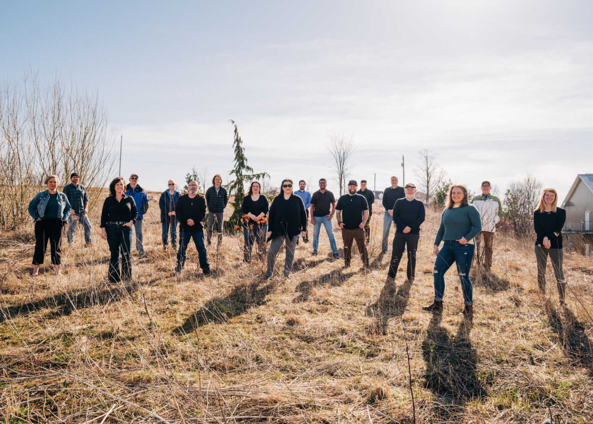

Community outreach
Connecting residents with supportive information, local resources and organized outreach activities.

Lutheran Confessional Church Pakistan Incorporated X is organized as a nonprofit corporation in the State of Georgia and operates for charitable, educational and community-centered purposes. Our work is focused on practical support, public benefit programs and outreach that strengthens local families and neighborhoods.
We maintain clear organizational records, publish contact information for verification, and provide a simple way for volunteers, partners and community members to reach our team at 1171 Atlanta Highway, Cumming, GA, 30040.
Core information for community members, partners and verification purposes.
Our programs are designed to be understandable, documented and useful to the public.
Connecting residents with supportive information, local resources and organized outreach activities.

Providing learning-focused activities, public awareness materials and skill-building opportunities.

Coordinating volunteer help and practical assistance for community-centered initiatives.